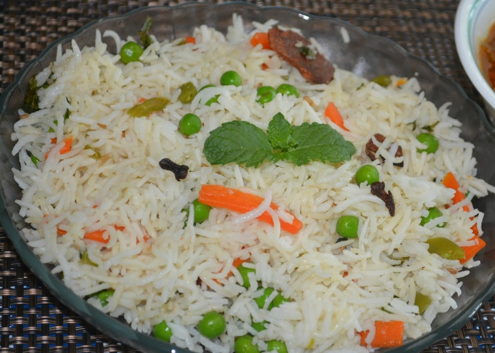

Vegetable Pulao recipe
Ingredient
- Maggi MAgic Cubes (vegetarian)- 2 Cubes,crumbled.
- Oil- 4 tablespoon.
- Cinnamon- 2(1 inch pieces), crushed.
- cloves- 5, crushed.
- Green Cardamon- 2, crushed.
- Star Anis- 1, crushed.
- Whole Peppercorns- 1 teaspoon, crushed.
- Onion- 2 medium, sliced
- Ginger-Garlic Paste- 1 teaspoon
- Vegetables (carrots, beans, cauliflower, potatoes and peas)-
4 cups(300 gms), chopped.
- Water- 31/3 cups(500 ml).
- Rice- 1 1/3 cups (200 gms).
- Salt to taste.
- Corriander Leaves- 4 tablespoons, chopped.

Methods
- Heat oil in a pressure cooker,add the cinnamon,cloves,green
cardamons, peppercorns and star anise. Then add the onions and saute
till golden-brown.
- Add the ginger-garlic paste and stir-fry till the raw smell is
gone.
Add the vegetables and mix well.
- Add the water, rice, coriander leaves and crumbled MAGGI Magic
Cubes
(vegetarian). Mix well and adjust salt to taste.
- Cover the pressure cooker and cook on low-flame for 2-3 minutes
after
the first whistle.